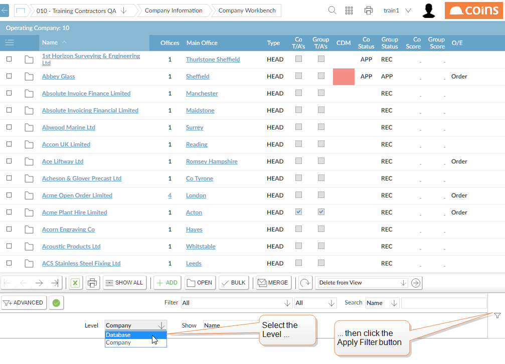
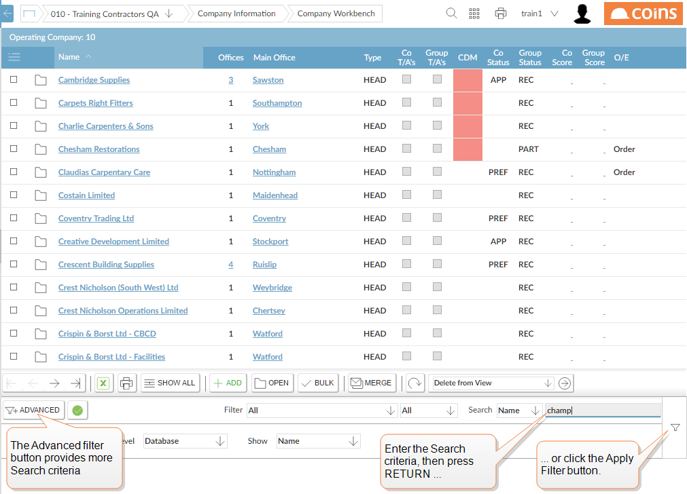
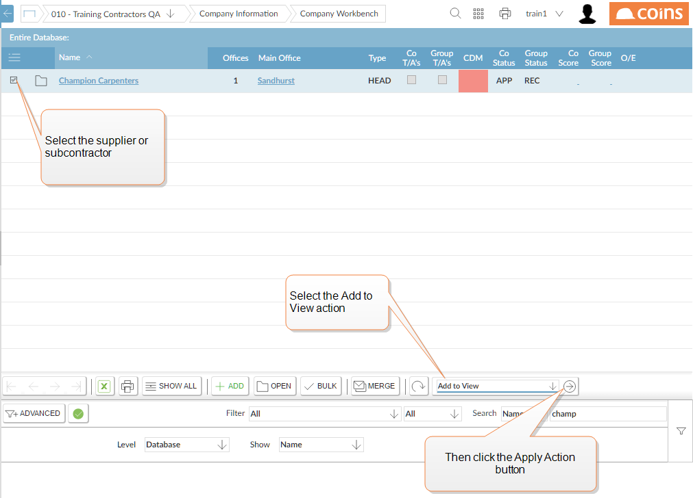

To bring a company into your view:
- Go to Companies.
- Use the Level selector to select the level you would like to browse, then click
 .
.

- Find the company using the Filter and/or Search field, then click the .

-
- From the action list, select Add to View and click
 .
.

The company will now be available in your view.
- Use the Level selectors to return to your base view.
When you change back to your base view, this record is included in the list. It is also included in any of your other views between your base view and the view from which you selected the record.
To remove a record from your view:
- When in your base view, select the record you want to remove. (You can only remove records from your base view.)
- From the action list, select Delete from View and click .
You cannot remove a record from the Company Information Workbench or Project Information System completely.